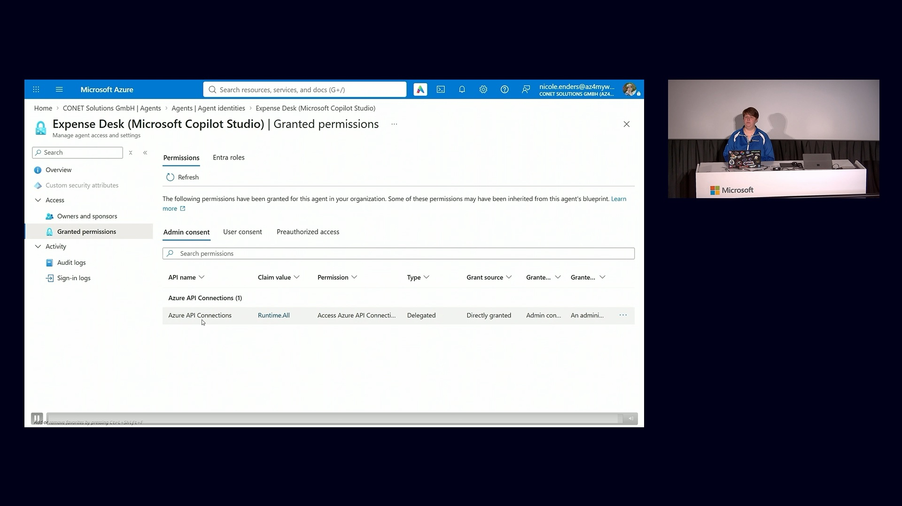
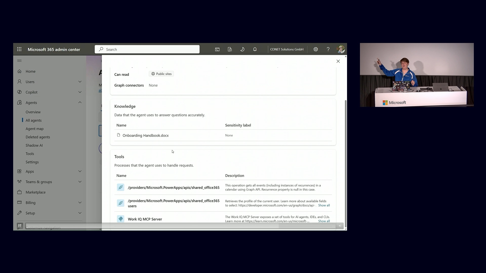
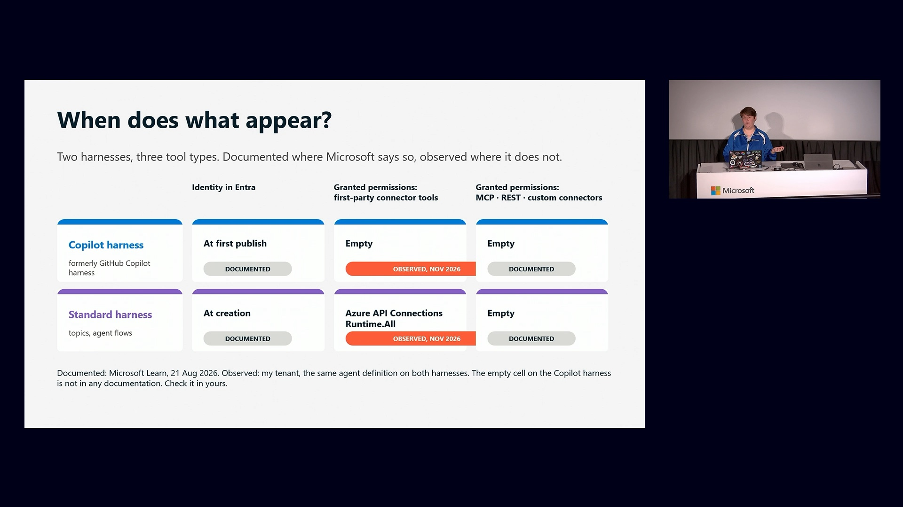
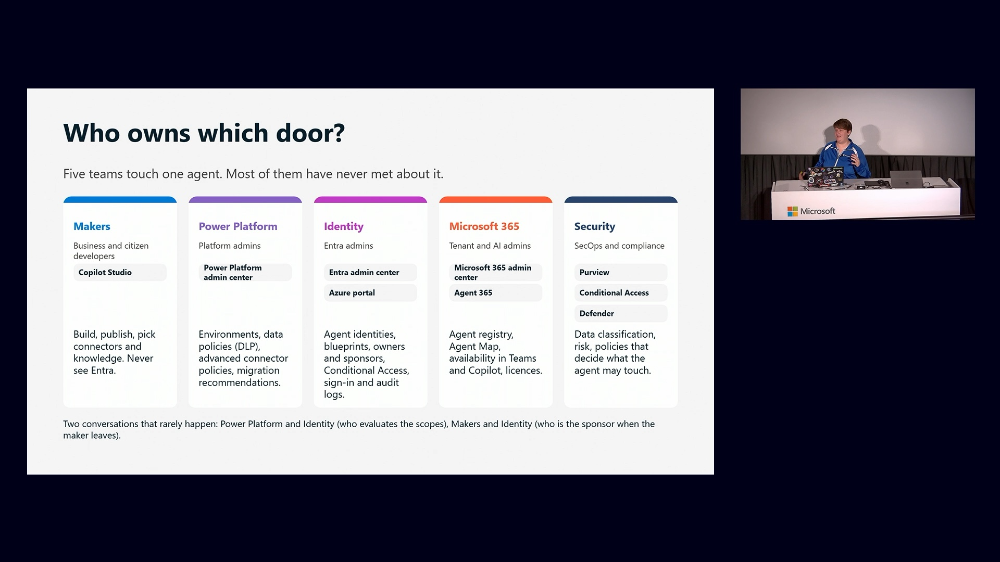

THR992 实机演示截帧 · 15:15
Entra 已授予权限页：两项 M365 工具聚合成单行记录
标准底座 Expense Desk 发布后，Granted permissions 仅写入一条 Azure API Connections（Runtime.All），而同期发布的 Copilot 底座权限栏完全为空 [1][2]。
自 2026 年 7 月起，Microsoft Copilot Studio 新建的每一款智能体都会自动获得一个强制分配的 Microsoft Entra 智能体身份（Agent ID），且界面上不再保留任何关闭或豁免开关 [1][2]。七届微软 MVP Nicole Enders 在 Ignite 2026 剧场专场 THR992 中横跨三个管理门户实机构建两款同配置智能体，当场揭开了两个不同底座在身份铸造时机与连接器权限显示上的隐藏落差，并为存量旧版智能体给出了周一即可执行的四步清查清单 [1][3]。
01 / Mandatory Principal Shift
业务人员在 Microsoft Copilot Studio 中点击“发布（Publish）”时，往往以为自己只是上线了一个对话机器人 [1]。自 2026 年 7 月微软正式强制推行智能体身份机制以来，每一次创建或发布动作都会在企业租户后台注册一个一等公民级别的 Microsoft Entra 智能体身份（Agent ID），而且在 Copilot Studio、Entra 管理中心与 Microsoft 365 管理中心的任何屏幕上，系统都不会再询问“是否需要为该智能体分配身份” [1][2]。
德国 conet Deutschland GmbH 首席开发工程师、连续七届微软 MVP 得主 Nicole Enders 在 THR992 开场抛出了一个尖锐的管理追问：既然每个智能体都已经成了拥有连接器范围、条件访问策略与独立生命周期的安全主体，管理员真正看清它能触达哪些业务数据了吗 [1]？为了验证官方文档之外的真实租户表现，她设计了一组严格控制变量的对照实验——在同一租户内使用同一份 Word 手册、挂载完全相同的两项办公连接器操作，分别基于 **Copilot 底座（原 GitHub Copilot 底座）与标准底座（Standard Harness）**构建两款员工服务智能体，并全程在三个管理门户间切换追踪底层变化 [1][2]。
下方交互导览台集成了 THR992 官方 Medius 点播视频流、完整英文逐字稿下载入口与五段核心议程的精确时间戳，点击顶部胶囊按钮即可按时间轴检视双底座实机核查细节 [1]：
按时间轴切换双底座草稿对照、发布后权限盲区、五团队治理分工与周一四步清查法，支持页面内直接加载微软官方点播播放器。
02 / Live Walkthrough: Two Harnesses, Three Portals
Nicole Enders 首先在 Copilot Studio 中使用 Copilot 底座新建了员工入职助手 Onboarding Buddy，上传预先准备的入职指南文档 Onboarding Handbook.docx，并挂载两项高频办公工具：用于拉取当前员工基本资料的 Office 365 用户档案操作（Get my profile），以及用于检查入职会议安排的 Outlook 365 日历视图操作（Get calendar view of events）[1]。保存全部草稿配置后，她立即切入 Azure 门户内的 Microsoft Entra 智能体身份列表刷新按时间倒序排查——此时列表中空无一物，Onboarding Buddy 在草稿阶段并未触发任何身份创建动作 [1]。
紧接着，她退回 Copilot Studio 首页第三项略显隐蔽的标准入口，基于标准底座创建了报销助手 Expense Desk [1]。两款智能体的配置体验已有明显分野：标准底座要求先输入名称立项，随后进入多标签页工作区（右侧附带实时测试窗格，且知识库文档上传后会显示明确的解析进度条；添加每项工具时还会弹出独立的业务名称与描述确认页，帮助模型靠清晰的元数据选对工具而不必把规则全塞进系统提示词）[1]。为 Expense Desk 挂载完全相同的两项工具后且尚未点击发布，再次刷新 Entra 智能体身份列表时，差异当场显现：同样处于草稿模式，标准底座的 Expense Desk 已经铸造出完整的 Entra Agent ID，而 Copilot 底座的 Onboarding Buddy 依然不存在 [1][2]。
点开草稿态 Expense Desk 的身份详情页可以看到，构建者本人（Nicole Enders）已被自动绑定为该智能体的保荐人（Sponsor），直接对智能体后续生命周期负责；同时页面显示其归属于全租户所有 Copilot Studio 智能体共同继承的唯一智能体身份蓝图（Agent Identity Blueprint），但此时的已授予权限（Granted permissions）与活动日志均为空白 [1][2]。

标准底座 Expense Desk 发布后，Granted permissions 仅写入一条 Azure API Connections（Runtime.All），而同期发布的 Copilot 底座权限栏完全为空 [1][2]。

无需登录 Copilot Studio，全局管理员即可在 Data & tools 页直接看清 Onboarding Handbook.docx、shared_office365users 接口路径与 Work IQ MCP 服务 [1][5]。
真正令人意外的现象发生在两款智能体双双点击 Publish 发布上线之后 [1]：
03 / Three Concepts & The Visibility Matrix
走出实机演示后，Nicole Enders 将智能体身份治理浓缩为每个团队都必须掌握的三个核心原语——蓝图（Blueprint）、连接器范围（Connector Scopes）与条件访问（Conditional Access） [1][2][3]。蓝图是 Entra 铸造智能体身份的唯一模板：Copilot Studio 在单个租户内共享同一个蓝图对象，它既承载默认的拥有者与保荐人规则，也是管理员一次性下发全局策略、自动覆盖当前及未来所有新建智能体的锚点 [1][2]。
第二个原语连接器范围很容易被误读为细粒度操作边界 [1]：写在 Entra Granted permissions 里的条目只代表该智能体“可调用哪个连接器（may call）”，而非“允许执行哪一个具体增删改动作（may do）”——真正的动作级放行与阻断仍由 Power Platform 数据策略（DLP）裁决 [1]。第三个原语条件访问则充当发放令牌前的规则引擎：如今智能体身份已能直接作为条件访问策略目标，但由于背后没有人类操作员，既无法弹窗要求多因素认证（MFA），也不存在终端设备合规校验；截至宣讲时，面向智能体身份唯一生效的规则是在 Teams 渠道中执行的“存在风险即阻断（block if risky）” [1][3]。

标准底座新建即生成身份并披露连接器范围，但 MCP、REST 与自定义连接器在双底座下均留白，且 Copilot 底座连第一方权限也未写入 [1][2]。

五个角色各自守着不同门户，最常缺失的是 Power Platform 与身份团队核对权限范围、以及构建者离职时的保荐人交接机制 [1]。
将微软官方 Learn 文档（2026 年 8 月 21 日版）与 Nicole 在自家生产租户的实机测试放在一起比对，就能看清为什么仅盯住单一后台会产生严重漏判 [1][2]：
| 核验维度 | Copilot 底座（原 GitHub Copilot） | 标准底座（Standard Harness） | 2025 存量旧版智能体 |
|---|---|---|---|
| Entra 身份类型与位置 | Entra Agent ID（Agents -> Agent identities）[1][2] |
Entra Agent ID（Agents -> Agent identities）[1][2] |
传统 Application ID（位于 Enterprise applications 带标签）[1] |
| 身份铸造触发时机 | 首次发布时（At first publish）——官方已记录 [1][2] | 新建命名时（At creation）——草稿态即存在 [1][2] | 历史创建，新建入口已彻底关闭 [1] |
| 蓝图继承与保荐人 | 共享唯一蓝图 + 自动绑定创建者保荐人 [1] | 共享唯一蓝图 + 自动绑定创建者保荐人 [1] | 无蓝图、无保荐人（离职易成孤儿应用）[1] |
| 第一方连接器权限显示 | 空白（Empty）——2026 年 11 月实测未写入文档 [1] | 聚合成单条 Azure API Connections (Runtime.All)（话题与流同理）[1][2] |
无连接器范围挂载 [1] |
| MCP / REST / 自定义连接器 | 空白（Empty）——官方文档已注明不展示 [1][2] | 空白（Empty）——官方文档已注明不展示 [1][2] | 无连接器范围挂载 [1] |
| 条件访问与审计日志 | 纳入范围（Teams 高风险阻断）+ Agent ID 事件流 [1][3] | 纳入范围（Teams 高风险阻断）+ Agent ID 事件流 [1][3] | 不在智能体策略范围内，仅记传统服务主体日志 [1] |
正因权限拼图分散在不同底座与后台，单个智能体实际上横跨了五个很少坐在一起开会的团队 [1]。一线**构建者（Makers）**只看得到 Copilot Studio，从未见过 Entra 界面；Power Platform 管理员掌管环境、数据策略、高级连接器策略与迁移建议；Entra 身份管理员把控蓝图、拥有者与保荐人、条件访问及登录审计日志 [1]。与此同时，Microsoft 365 与智能体管理员依托 Agent 365 清单与图形化 **Agent Map（智能体拓扑图）**巡检工具调用风险与许可证，安全合规团队则在 Purview 与 Defender 中制定数据分级防线 [1][5]。Nicole 特别提醒企业补齐两场常年缺位的对话：一是 Power Platform 与身份团队联合评估连接器范围，二是构建者与身份团队明确“当创建智能体的员工离职时，谁来接任保荐人” [1]。
04 / Legacy 2025 Agents & Monday Checklist
除了今天新建的主体，几乎每家企业租户里还躺着一批去年（2025 年强制切换前）上线的存量智能体——例如演示中的旧版 Onboarding Bot [1]。如果打开 Copilot Studio 的 Settings -> Advanced -> Metadata 查看元数据标签，或者去 Entra 排查就会发现：2025 年构建的旧智能体只有传统 Application ID，藏在 Entra 的**企业应用（Enterprise applications）**列表下，既没有蓝图与保荐人，也无法挂载连接器范围或纳入智能体条件访问策略 [1][4]。
面对这些存量旧智能体，翻阅微软当前公开资料居然会读到三种并存的处置答案 [1][4]：
在规划存量盘点的同时，下一波架构演进已经抵达 [1][6]。其一是关联专场 BRK261 深入拆解的智能体账户（Agent Accounts，路线图编号 Roadmap 570430，此前曾称 Agent Users，目标 2026 年 11 月正式商用），让持久化智能体直接拥有独立的 Microsoft 365 账户、专属邮箱、Teams 在线状态与 Office 文档访问权 [1][6]。其二是面向智能体账户预览开放的细粒度条件访问控制杆（新增设备、网络与执行环境校验，而普通智能体身份现阶段仍仅限风险评估与阻断），配合 2026 年 8 月上线的 Agent 365 构成全域治理底座 [1][5][6]。
打开 Entra -> Agents -> Agent identities 清单，核实近期上线的 Copilot Studio 智能体是否均已落盘（注意：未发布的 Copilot 底座草稿与 2025 年存量旧智能体不会出现在此处）[1]。
逐一检视智能体身份下的接口权限，并同步在 Agent 365 的 Data & tools 页与 Power Platform 数据策略中双向对账（填补 Copilot 底座留白与 Runtime.All 聚合盲区，管住具体允许执行的连接器动作）[1][2]。
进入 Entra Enterprise applications 视图，筛选带有 AgentCreatedBy:CopilotStudio 标签的传统服务主体，摸清租户内究竟还存留多少台无保荐人、无条件访问保护的旧版智能体 [1]。
在微软后台自动迁移触达前，先为每台旧智能体指定明确的拥有者与保荐人，按业务关键度在“就地预览迁移、保留观察、直接封禁淘汰”间做出决断，并将智能体保荐人正式写入企业员工**入转调离（Joiner-Mover-Leaver）**管理制度 [1][4]。
05 / References: Official Primary Sources & Engineering Guides
https://medius.microsoft.com/Embed/video-nc/1de00190-3e6a-40e0-8c56-832593cdb25f）与完整双语 WebVTT 演讲字幕（2026-11-20）
MC1478488 自动迁移与八步核验通告（2026-09）